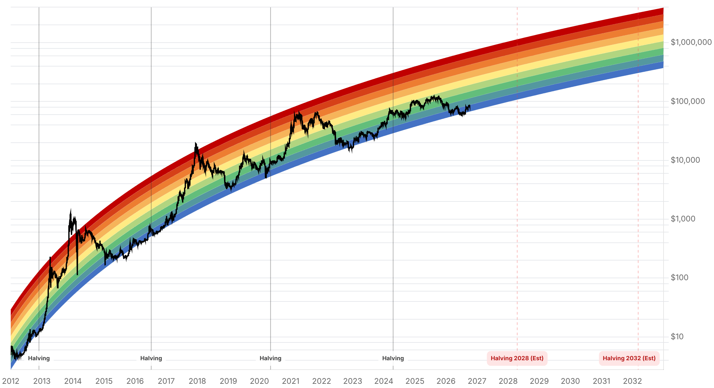

Reporte financiero
BTC cotiza en USD 84.202,30 en vivo (07:27 UTC), un -1,57% frente al cierre de ayer (USD 85.546,23), tras romper esta madrugada el soporte de USD 85.700-85.300 que contenía el precio desde el rechazo en USD 87.000 reportado ayer: entre las 01:45 y las 02:10 UTC el precio cayó de forma abrupta desde USD 85.341 hasta un mínimo de USD 83.577 en apenas ~20 minutos, en medio de un repunte de tensión en el Estrecho de Ormuz -medios especializados reportan al menos nueve ataques con drones y misiles iraníes contra buques comerciales durante la primera semana de octubre, lo que empujó al crudo Brent por encima de USD 101/barril y al rendimiento del Tesoro a 10 años hasta 5,25%, dejando poca liquidez para activos de riesgo como Bitcoin-. La caída gatilló una cascada de liquidaciones mucho mayor que la de ayer: USD 412,62M en una sola hora (más del 97% en posiciones largas) y USD 479M en largos liquidados en las 24 horas, con 104.836 cuentas liquidadas en total -triplicando los USD 172,45M del reporte de ayer-. En paralelo, y en contraste con la caída de precio, los flujos de ETFs de BTC volvieron a terreno positivo el 6 de octubre: entrada neta de USD 118,86M, la tercera jornada consecutiva de entradas en octubre, revirtiendo la salida de USD 89,8M del 5 de octubre reportada ayer -IBIT (BlackRock) lideró con +USD 122,00M, Morgan Stanley aportó +USD 7,84M, compensados por salidas menores no desglosadas en otros fondos-. El Fear & Greed Index bajó de 73 a 71 (sigue en zona de Greed), una caída moderada que esta vez sí acompaña al retroceso de precio, a diferencia de la divergencia señalada ayer. El catalizador más inmediato son las minutas de la reunión de la Fed del 16-17 de septiembre, que se publican hoy a las 14:00 ET (18:00 UTC) -todavía no disponibles al momento de esta edición (07:27 UTC)-, por lo que su contenido queda pendiente de confirmar en la próxima entrega; no hay cambios verificables en las probabilidades de la Fed respecto a lo reportado ayer. Sin novedades en el frente regulatorio (demanda contra la OCC, sanciones a la red A7) desde ayer, salvo que el plazo que el Senado dio al Tesoro/DOJ para responder sobre el informe de Tether vence en dos días, el 9 de octubre.
Entre las 01:45 y las 02:10 UTC de hoy, Bitcoin cayó abruptamente de USD 85.341 a un mínimo de USD 83.577 (-2,1%), quebrando el soporte de USD 85.700-85.300 que había contenido el precio tras el cuarto rechazo en USD 87.000 reportado ayer. El precio actual (USD 84.202,30) se ubica por debajo de toda la zona de consolidación de los últimos días, acercándose al soporte de USD 82.500-82.600 que Rekt Capital había identificado como el límite inferior del rango vigente.
Medios especializados atribuyen la caída de esta madrugada a un repunte de tensión en el Estrecho de Ormuz: al menos nueve ataques con drones y misiles iraníes contra buques comerciales durante la primera semana de octubre habrían empujado al crudo Brent por encima de USD 101/barril y al rendimiento del Tesoro a 10 años hasta 5,25%, fortaleciendo al dólar y reduciendo la liquidez disponible para activos de riesgo como Bitcoin. Es un episodio distinto y de menor magnitud que el bloqueo más amplio del Estrecho reportado en otros momentos de 2026 (que había llevado a BTC a mínimos de USD 70.000-75.000); no hay que confundir ambos eventos.
La caída relámpago liquidó USD 412,62M en posiciones apalancadas en apenas una hora (más del 97% en largos), acumulando USD 479M en liquidaciones de largos durante las 24 horas y 104.836 cuentas liquidadas en total -una cascada roughly 3 veces mayor que los USD 172,45M del reporte de ayer, y casi en su totalidad concentrada en posiciones largas (a diferencia de ayer, cuando la ventana de 12h ya mostraba cortos siendo exprimidos).
Pese a la caída de precio, los ETFs spot de BTC registraron una entrada neta de USD 118,86M el 6 de octubre -la tercera jornada positiva consecutiva del mes-, revirtiendo la salida de USD 89,8M del 5 de octubre reportada ayer. IBIT (BlackRock) lideró con +USD 122,00M en entradas y Morgan Stanley aportó +USD 7,84M, compensados por salidas menores en otros fondos no desglosadas en la fuente. Los activos totales en ETFs spot de BTC se mantienen en torno a USD 110.680M, en línea con lo reportado ayer. Dos cambios de signo en dos días (salida el 5, entrada el 6) sugieren alta sensibilidad de corto plazo más que una tendencia consolidada en ningún sentido.
Las minutas de la reunión del FOMC del 16-17 de septiembre, cuya publicación se anticipaba ayer para 'mañana', se publican efectivamente hoy 7 de octubre a las 14:00 ET (18:00 UTC) -varias horas después del cierre de esta edición (07:27 UTC)-. Su contenido y la reacción del mercado quedan pendientes de confirmar en el reporte de mañana; no inventamos su contenido. Las probabilidades de mercado para las próximas decisiones de la Fed no muestran cambios verificables frente a lo reportado ayer. Por separado, el plazo que el Senado (oficina del senador Blumenthal) dio al Tesoro y al Departamento de Justicia para responder sobre el informe de minoría sobre Tether (publicado el 28 de septiembre) vence en dos días, el 9 de octubre -sin respuesta registrada todavía.
| Periodo | Valor |
|---|---|
| 1 oct | 84853.1 |
| 2 oct | 84497.21 |
| 3 oct | 84763.58 |
| 4 oct | 86480.3 |
| 5 oct | 85786.59 |
| 6 oct | 85557.56 |
| 7 oct (en vivo) | 84202.3 |
| Periodo | Valor |
|---|---|
| Fear & Greed | 71 |

El catalizador inmediato son las minutas de la Fed de hoy (14:00 ET / 18:00 UTC), aún no publicadas al cierre de esta edición -su contenido y la reacción del mercado quedan para el reporte de mañana-. Con el precio en USD 84.202 tras romper el soporte de USD 85.700-85.300, el nivel a vigilar es el soporte de USD 82.500-82.600 que señaló ayer Rekt Capital -ahora mucho más cercano que ayer-; una pérdida de ese nivel abriría paso al cluster de liquidaciones largas identificado en esa zona, mientras que una recuperación sobre USD 85.300-85.700 revalidaría el rango previo. El plazo del Senado al Tesoro/DOJ sobre Tether vence el 9 de octubre.
La reversión de los flujos de ETF (positiva de nuevo el 6 de octubre, +USD118,86M, tras la única salida negativa del 5) es la novedad de mediano plazo más relevante -dos cambios de signo en dos días sugieren alta sensibilidad de corto plazo, no necesariamente una tendencia consolidada en ningún sentido, y habrá que ver si se sostiene pese a la caída de precio de hoy-. La pregunta planteada por Subburaj (Giottus) sobre la alineación ascendente de medias de 50/100/200 días sigue abierta y sin actualización hoy. Sin cambios verificables en las probabilidades de la Fed frente a lo reportado ayer.
Sin cambios en los objetivos de precio de largo plazo ya reportados en ediciones anteriores (Citigroup USD 113.000, Bernstein, Standard Chartered, Tom Lee, NYDIG, Armstrong) ni en el trasfondo regulatorio (demanda de la ICBA contra la OCC, sanciones a la red A7) reportado ayer -no se encontró desarrollo nuevo y verificable en ese frente hoy, más allá del plazo de respuesta sobre Tether que vence el 9 de octubre.
La caída relámpago de hoy llevó al precio de la zona de USD 85.700-87.000 vigilada ayer a apenas ~USD1.600 por encima del soporte de USD 82.500 que señaló Rekt Capital. Una pérdida sostenida de ese nivel, con el volumen de liquidaciones ya elevado hoy, aumentaría la probabilidad de una extensión de la caída; una recuperación sobre USD 85.300-85.700 revalidaría en cambio el rango previo.
Su contenido aún no está disponible al momento de este reporte. Dado que ya hubo una cascada de liquidaciones de largos de ~USD480M esta madrugada por un shock distinto (tensión en Ormuz), el mercado queda con menos colchón para absorber un tono más hawkish de lo esperado en las minutas.
Dos cambios de signo consecutivos en los flujos diarios de ETF, sin una tendencia clara, sugieren ruido de corto plazo más que una señal de convicción institucional en una dirección. Monitorear varios días más antes de usar este dato como argumento central en una u otra dirección.